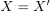
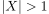

Bijektiv stetige Abbildung nicht automatisch als Homeomorphismus
1. Satz
Seien  und
und  topologische Räume und
topologische Räume und  eine stetige, bijektive Abbildung, so ist
eine stetige, bijektive Abbildung, so ist  nicht automatisch ein Homeomorphismus.
nicht automatisch ein Homeomorphismus.
2. Beweis
Gegenbeispiel:
Sei  eine Menge mit  und  mit der indiskreten Topologie,
mit der indiskreten Topologie,  mit der diskreten Topologie und die Identitätsabbildung.
dabei ist die Umkehrfunktion nicht stetig, beispielsweise das Urbild einer einelementigen Menge
mit der diskreten Topologie und die Identitätsabbildung.
dabei ist die Umkehrfunktion nicht stetig, beispielsweise das Urbild einer einelementigen Menge